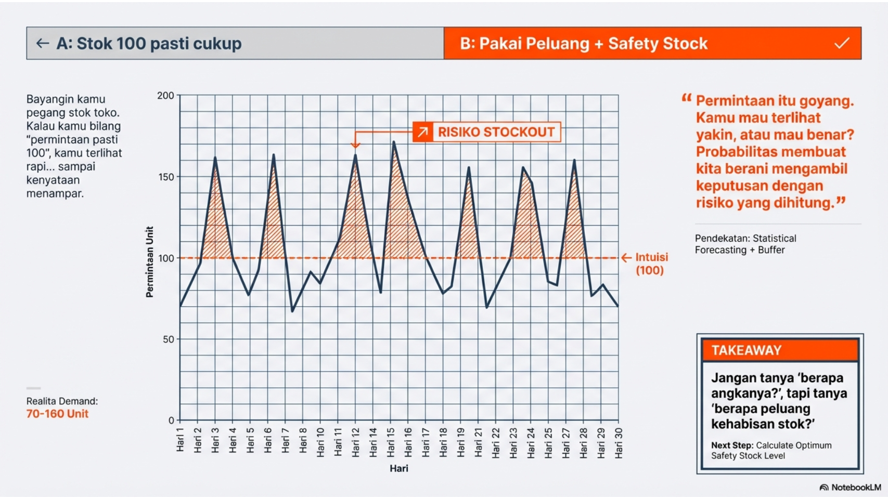

Lihat kode
import itertools
list(itertools.product(["H","T"], repeat=2))[('H', 'H'), ('H', 'T'), ('T', 'H'), ('T', 'T')]Probabilistic Experiment, Sample Space, Event, Probability Definition and Axioms

Minggu 2: Kerangka Probabilitas dan Operasi Kejadian**
Tema Misi: “Mapping the Glitch: From Chaos to Logical Sets”
Fokus: Membangun mental model tentang “Semesta Kemungkinan” (\(\Omega\)) dan menerjemahkan logika sistem menjadi Himpunan.
itertools.product untuk men-generate semua kombinasi bit (000, 001, …, 111).& User Premium).| Login via App).Fokus: Hands-on Python untuk memanipulasi himpunan dan memverifikasi hukum probabilitas.
not (A or B) sama dengan (not A) and (not B)?.WHERE condition1 AND condition2 adalah implementasi langsung dari irisan himpunan probabilistik.set: Python memiliki tipe data native untuk operasi himpunan matematika.matplotlib-venn sangat berguna untuk memvisualisasikan proporsi irisan data.Judul: Week 2: The Logic of Glitches - Set Theory in Action
Deskripsi: Anda adalah Data Engineer di sebuah platform streaming. Sistem logging Anda mencatat status ribuan sesi user. Tugas Anda adalah membersihkan data dan menghitung probabilitas anomali menggunakan Teori Himpunan.
Soal Python (Notebook): 1. Generate Data: Buat 10.000 data dummy sesi dengan atribut acak: region (ID/SG/US), device (Mobile/Desktop), dan status (Success/Buffering/Error). 2. Filter Himpunan: Buat set Python untuk kejadian: * \(A\): Sesi dari Indonesia (ID). * \(B\): Sesi yang mengalami Error. 3. Analisis Logika: * Hitung \(P(A \cap B)\): Peluang error di Indonesia. * Hitung \(P(A \cup B)\): Peluang sesi berasal dari Indonesia ATAU mengalami error. Gunakan rumus inklusi-eksklusi dan bandingkan hasilnya dengan fungsi len(A.union(B)). 4. Verifikasi De Morgan: Buktikan dengan kode bahwa “Tidak (ID atau Error)” sama dengan “Bukan ID dan Bukan Error”.
Berikut adalah solusi untuk 15 soal yang diambil dari Minggu 02: Kerangka Probabilitas dan Operasi Kejadian.
1. Soal: Jelaskan mengapa aksioma probabilitas Kolmogorov mengharuskan nilai probabilitas berada di rentang $\(. * **Solusi:** Probabilitas adalah ukuran ("measure") dari sebuah himpunan. Nilai non-negatif (\)P(A) \() adalah syarat mutlak ukuran fisik/matematis (tidak ada panjang atau berat negatif). Nilai maksimal 1 (\)P()=1$) adalah hasil dari normalisasi, yang menetapkan bahwa “sesuatu dalam semesta pasti terjadi”.
2. Soal: Apa perbedaan antara kejadian saling lepas (mutually exclusive) dan kejadian kolektif lengkap (collectively exhaustive)? * Solusi: * Saling Lepas: Kejadian tidak memiliki irisan (\(A \cap B = \emptyset\)). Tidak bisa terjadi bersamaan. * Kolektif Lengkap: Gabungan kejadian mencakup seluruh ruang sampel (\(A \cup B = \Omega\)). Salah satu pasti terjadi. * Partisi: Jika kejadian bersifat keduanya sekaligus.
3. Soal: Buktikan secara grafis menggunakan diagram Venn mengapa \(P(A \cup B) = P(A) + P(B) - P(A \cap B)\). * Solusi: Bayangkan dua lingkaran \(A\) dan \(B\) yang tumpang tindih. Jika kita menjumlahkan luas \(A\) dan luas \(B\), area irisan di tengah (\(A \cap B\)) terhitung dua kali. Oleh karena itu, kita harus mengurangkan satu kali area irisan tersebut agar total luasnya akurat.
4. Soal: Mengapa probabilitas dari ruang sampel \(\Omega\) harus bernilai 1? * Solusi: Ini adalah Aksioma Normalisasi. \(\Omega\) mendefinisikan “seluruh kemungkinan hasil”. Probabilitas 1 merepresentasikan kepastian mutlak bahwa salah satu dari hasil tersebut akan terjadi setelah eksperimen dilakukan.
5. Soal: Jelaskan konsep partisi ruang sampel dalam konteks segmentasi pengguna aplikasi. * Solusi: Partisi membagi seluruh user base (\(\Omega\)) menjadi kelompok-kelompok yang tidak tumpang tindih (misal: Basic, Pro, Enterprise) dan mencakup semua user (tidak ada user tanpa status). Ini memungkinkan analisis total probabilitas dengan menjumlahkan perilaku tiap segmen secara terpisah.
6. Soal: Sebuah aplikasi mendeteksi user menggunakan sistem operasi Android (A) atau iOS (I). Jika 60% menggunakan A, 30% menggunakan I, dan 10% menggunakan sistem lain, apakah A dan I saling lepas? * Solusi: Ya, dalam konteks satu device tertentu pada satu waktu, sebuah device tidak bisa berstatus Android dan iOS sekaligus. Secara himpunan \(A \cap I = \emptyset\), sehingga mereka saling lepas.
7. Soal: Dalam sistem keamanan, sensor A memiliki probabilitas deteksi 0,8 dan sensor B 0,7. Jika probabilitas keduanya mendeteksi adalah 0,6, hitung probabilitas setidaknya satu sensor bekerja. * Solusi: Gunakan Inklusi-Eksklusi: \(P(A \cup B) = P(A) + P(B) - P(A \cap B)\) \(P(A \cup B) = 0,8 + 0,7 - 0,6 = 0,9\).
8. Soal: Analisis probabilitas kegagalan sistem redundan di mana komponen A dan B harus mati secara bersamaan agar sistem lumpuh. * Solusi: Ini adalah logika irisan (\(A \cap B\)). Karena sistem redundan (paralel), kejadian sistem mati adalah irisan dari matinya komponen-komponen penyusunnya. Probabilitasnya jauh lebih kecil daripada komponen tunggal.
9. Soal: Jika sebuah perusahaan memiliki dua ISP (Indosat dan Telkom), gambarkan ruang sampel status koneksi internet perusahaan tersebut. * Solusi: Ruang sampel terdiri dari kombinasi status kedua ISP (Misal 1=Up, 0=Down): \(\Omega = \{ (Indosat=1, Telkom=1), (1,0), (0,1), (0,0) \}\). Kejadian “Internet Mati Total” hanya terjadi pada outcome \((0,0)\).
10. Soal: Sebuah database mencatat user yang aktif (A) dan user yang membayar (B). Deskripsikan dalam bahasa himpunan kejadian “user aktif yang tidak membayar”. * Solusi: User aktif (\(A\)) DAN User tidak membayar (\(B^c\)). Notasi himpunan: \(A \cap B^c\) (atau \(A - B\)).
11. Soal: Implementasikan fungsi Python untuk menghitung probabilitas gabungan dari dua kejadian menggunakan input \(P(A)\), \(P(B)\), dan \(P(A \cap B)\). * Solusi: ```python def prob_union(p_a, p_b, p_intersection): return p_a + p_b - p_intersection
# Contoh
print(prob_union(0.8, 0.7, 0.6)) # Output: 0.9
```12. Soal: Gunakan tipe data set di Python untuk mensimulasikan operasi irisan dan gabungan pada 1.000 data sampel identitas user. * Solusi: ```python # Misal user_id 1-500 grup A, 300-800 grup B Group_A = set(range(1, 501)) Group_B = set(range(300, 801))
Intersection = Group_A & Group_B # Irisan
Union = Group_A | Group_B # Gabungan
print(f"Jumlah Irisan: {len(Intersection)}") # 201 user (300-500)
```13. Soal: Buat program yang memverifikasi hukum De Morgan secara empiris melalui simulasi acak. * Solusi: ```python import random Omega = set(range(100)) # Semesta 0-99 A = set(random.sample(list(Omega), 40)) B = set(random.sample(list(Omega), 50))
# Hukum 1: (A U B)^c = A^c n B^c
LHS = Omega - (A | B)
RHS = (Omega - A) & (Omega - B)
print(f"De Morgan Valid? {LHS == RHS}")
```14. Soal: Tulis skrip untuk menghitung probabilitas komplemen dari sekumpulan kejadian yang diberikan dalam bentuk list. * Solusi: python events_prob = [0.1, 0.2, 0.05] # P(E1), P(E2)... diasumsikan disjoint prob_union = sum(events_prob) prob_complement = 1 - prob_union print(f"Probabilitas Komplemen (None of the above): {prob_complement}")
15. Soal: Visualisasikan diagram Venn untuk dua kejadian menggunakan pustaka matplotlib-venn. * Solusi: ```python from matplotlib_venn import venn2 import matplotlib.pyplot as plt
# Subset sizes: (Ab, aB, AB) -> (A only, B only, Intersection)
# Jika P(A)=0.8, P(B)=0.7, Irisan=0.6:
# A only = 0.2, B only = 0.1, Irisan = 0.6
venn2(subsets = (0.2, 0.1, 0.6), set_labels = ('Sensor A', 'Sensor B'))
plt.show()
```import itertools
list(itertools.product(["H","T"], repeat=2))[('H', 'H'), ('H', 'T'), ('T', 'H'), ('T', 'T')]Ruang sampel (S) sebagai himpunan semua hasil yang mungkin, kejadian (E) sebagai himpunan bagian dari ruang sampel, dan aksioma probabilitas (nilai peluang antara 0 dan 1, total peluang semesta = 1).
Dalam pengiriman data digital, kita ingin mengetahui peluang terjadinya kesalahan bit. Jika dikirim 3 bit, apa ruang sampelnya dan berapa peluang setidaknya satu bit salah?
Mendaftar ruang sampel S = {000, 001, …, 111}. Jika kejadian E adalah ‘setidaknya satu error’, kita hitung jumlah elemen di E dibagi total elemen di S untuk mendapatkan probabilitasnya, yang digunakan untuk menentukan kualitas saluran komunikasi.
Gunakan sel di bawah ini untuk mengimplementasikan simulasi atau penyelesaian masalah di atas menggunakan Python.
# Tulis kode Python Anda di sini
import numpy as np
import pandas as pd
import matplotlib.pyplot as plt
import scipy.stats as stats
print("Siap untuk komputasi Minggu 02!")Siap untuk komputasi Minggu 02!